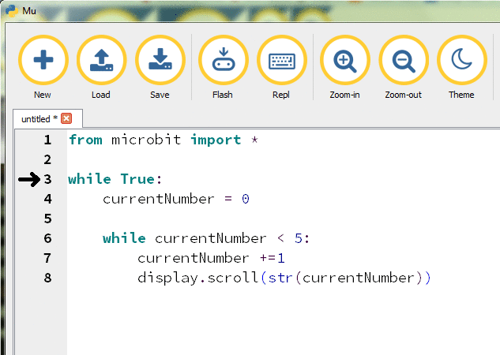

Loopy randomness
Round in circles
Learn It
- As well as
Ifand variables, loops are essential for coding. - You've used them throughout this topic already. Every time you write
While True:, you've starting an infinite loop; one which never ends. - Loops don't always need to last forever though.
Learn It
- There are two types of loop you can use:
WHILEandFOR. - We'll just look at
WHILEtoday; you'll bump intoFORloops some other time. - We could write a count up app…
from microbit import * while True: currentNumber = 0 while currentNumber < 5: currentNumber +=1 display.scroll(str(currentNumber))
- In this program, the
currentNumbervariable is increased by 1, then the current number is scrolled across the screen. - Each time the two instructions are executed, the while condition is checked to see if it is still true. As soon as
currentNumberisn't less than 5,currentNumberis reset back to 0, theWhile Trueloop restarts. - The animation below shows the flow of the program, and the value of the variable as the program runs.

Lucky Dip
Randomness
- Computers struggle with generating genuinely random numbers, but can produce numbers that look random. We call these 'pseudorandom'.
- To get started, we first use
import randomto bring in some extra code to support random numbers. - Next, ask the Micro:bit to fire up its random number generator with the
random.seed()command. - After that, we can use
random.randint(a, b)whenever we want to get a random number betweenatob(e.g. 1 to 10). When we have the ability to use random numbers, we can make some really nice games for your Micro:bit. - You can read more on random numbers in the MicroPython documentation, here.
- Try this:
from microbit import * import random random.seed() while True: targetNumber = random.randint(5, 10) while targetNumber > 1: targetNumber -=1 display.scroll(str(targetNumber))
Badge It
- Silver: Write a program to count up from 1 to 5, then back down to 1, up to 5 again and so on repeatedly. Your pseudocode will be:
IMPORT MicroPython
WHILE True
currentNumber = 0
WHILE currentNumber > 5:
currentNumber += 1
PRINT currentNumber
END WHILE
WHILE currentNumber < 1:
currentNumber -= 1
PRINT currentNumber
END WHILE
END WHILE
- Gold: Write a two-player game. The program should wait a random time between 1 and 5 seconds, then show an image. Player 1 then has to push button A as quickly as they can while player 2 has to push button B as quickly as possible. Whichever player pushes the button first wins, and either an A or a B should be shown on the display. The game should reset after a few seconds.
- Platinum: Make the Micro:bit version of the popular game, Bop-It. When the game starts, use the
display.show()command to give the user an instruction (e.g. A, B, 0, 1, 2 for the buttons and 'S' for shake). If the player performs the action, a smiley face is shown, then another instruction is given. Once they get it wrong, they're shown a sad face.- Tip: This is pretty hard. Start by just getting the player to push button A. Once that works, add the ability to push B and build up your code slowly. You can download a teacher version to try at home for your Micro:bit here.